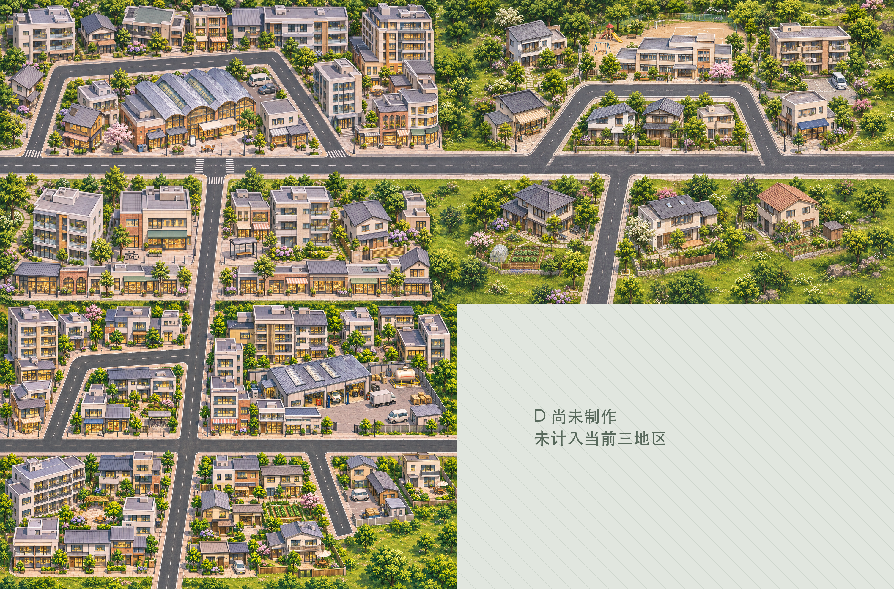
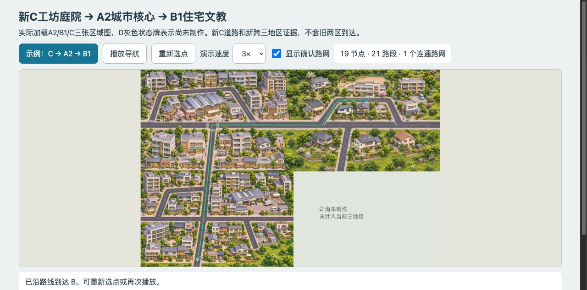

完整API原文件未插值、未滤色或程序画楼。一张原生，不是旧图裁片。输入只用了结构、原25画法、必要北窄带及A2密度局部，没有附整张邻图复制构图。

3008×1984实际导图；页面总览会适配，近景另用原像素裁片。D灰色牌只是未制作状态，不算第四区。CLI渲染不冒称原生GUI窗口通过。
偏移只应用一次。C北路中心约679，参考679.5；53/54px车行宽差1px，实际通路可见，没有涂路或拉伸修补。
工坊、城市住宅和南侧庭院有用途差异，不是又一市场/学校或遍地菜畦。新C风格和密度仍由用户审阅。

新运行读回含38次连续位置采样、实际C图片SHA、最终TMJ SHA和到达状态；不是旧两区截图。19节点、21路段、1连通分量。圆点A/B是起终点，不是地区编号。
3张运行区域图9873153字节；另1张D状态牌不算新原生。本轮不生产D、不新开端口、不测正式游戏/存档；最终格数和米数未冻结。